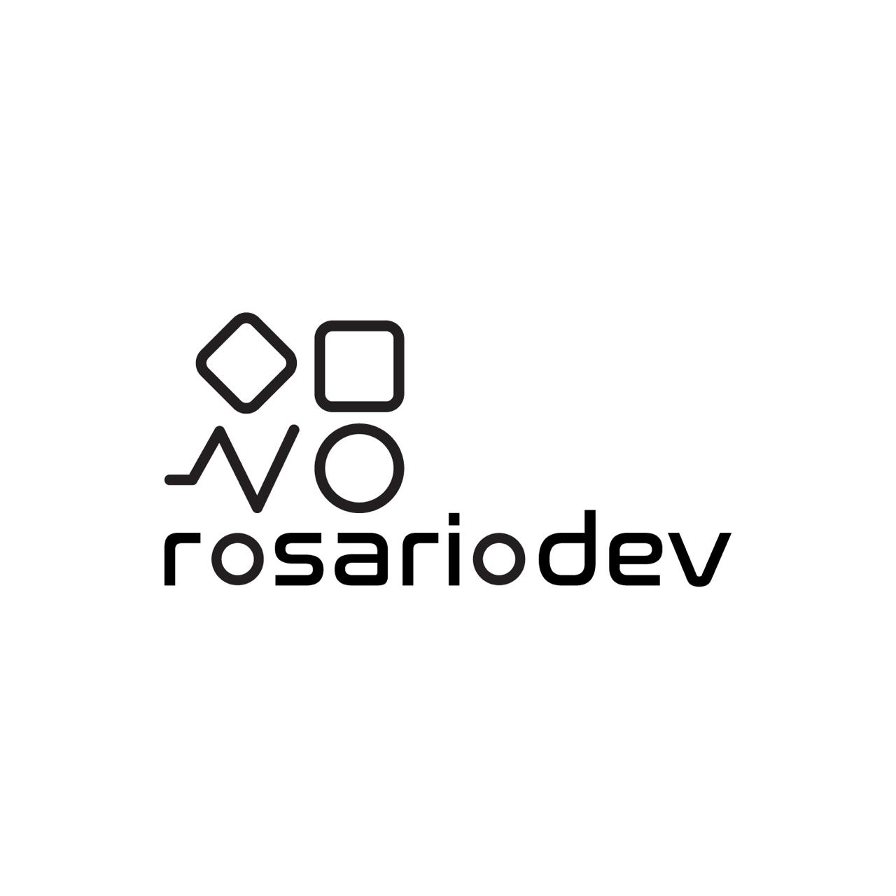

Web apps
Custom interfaces & internal tools
Dashboards, admin panels and portals built specifically around your workflows and data, not the other way around.

Software · Automation · AI
RosarioDev is a small studio focused on building custom web apps, automation flows and AI-assisted tools. No generic templates, no unnecessary complexity—just systems that reduce friction in your daily operations.
Ideal for digital businesses, studios and teams that need reliable internal tools, without hiring a full dev team.
Workflow automated
Client onboarding → 4 min
Internal dashboard
Live reports, no manual exports
Product shipped
Reservio — live & running
Instead of pushing you into a one-size-fits-all platform, RosarioDev studies how you actually operate—your tools, your constraints, your clients—and then designs solutions around that reality.
From the first automation to a complete internal system, every decision is driven by clarity: fewer tabs, fewer manual steps, more control.
Thoughtful systems
Every feature and integration must earn its place. If it doesn't simplify your work, it doesn't ship.
Long-term mindset
Clear architecture and documentation so your tools stay understandable, even as you grow.
Snapshot
Design and build tailored systems: from small automations to full internal tools.
Fit
You need something more coherent than a pile of spreadsheets, but not a full corporate ERP yet.
Maybe your operation currently lives inside WhatsApp, Google Sheets, and a couple of SaaS tools. It works, but it's fragile: things get lost, reporting is painful, and onboarding new people is slow.
RosarioDev focuses on designing the backbone: clear data structures, predictable processes, and interfaces your team can actually use day-to-day.
Start with a 30-minute call ↗No surprises, no black boxes. Here's exactly how a project goes from first message to a live system.
Discovery
A 30-minute call where we go through your current tools, your team's friction points, and what a good outcome looks like. No sales pitch — just clarity on whether we're the right fit.
Build
Architecture first, then development in short cycles. You see real progress early, give feedback on working software, and we adjust — not on docs, on the actual thing.
Launch
We deploy, onboard your team, and document what we built. After launch, we're available for improvements and maintenance — not gone the moment we send the invoice.
Each engagement is tailored, but most projects fall into one of these tracks.
Web apps
Dashboards, admin panels and portals built specifically around your workflows and data, not the other way around.
Automation
n8n, Make and custom APIs to move data between forms, CRMs, payment systems and reports—without human copy-paste.
Data & AI
Clean data models, dashboards and AI-assisted tools that help your team make better decisions without adding noise.
Software we built and shipped ourselves.
Booking platform built for personal trainers and their clients. Schedule sessions, manage payments, and keep everything in one frictionless flow — no spreadsheets, no back-and-forth.
How it works
Trainers create their profile and set availability
Clients browse, book, and pay in one step
Payments processed securely via Stripe and ATH Móvil
Both parties manage everything from one dashboard
Designed for clarity, speed, and secure payments.
Tools & ecosystems RosarioDev plays well with
Send a short message explaining where things feel messy today: duplicated work, manual reporting, scattered data… From there, we'll map a realistic path forward.
Email: contact@rosariodev.com
WhatsApp Business: +1 (787) 239-7182
Quick contact
You can start with something as simple as:
"We currently manage our clients / bookings / projects in…"
"The part that feels most chaotic is…"
"Ideally, I'd love if the system could…"